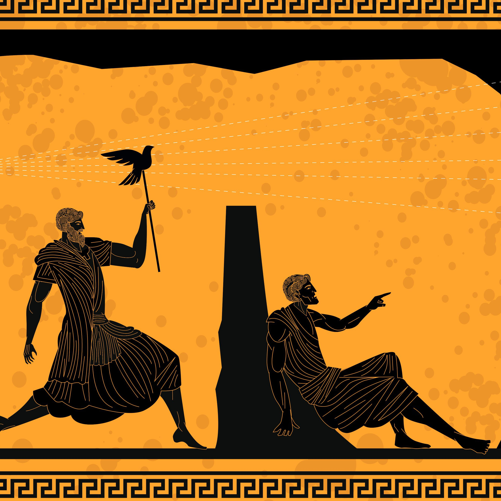
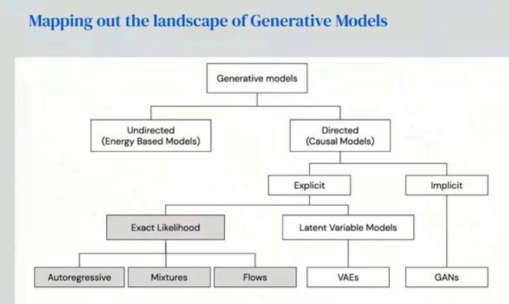

I was quite confused by the two separate workshops on interpretable machine learning running at the same time, fair enough one focused on explainable AI and the other referenced human interpretability but with so many papers in the space bemonaing the lack of disctinction between buzzwords, this seemed a little bizzare. Another bizzare concept for me is virtual poster sessions, which are even more awkward than in person, in my opinion. Perhaps an opinion shared by many seeing as the poster sessions were a bit of a flop from what I hear.
This workshop was the higlight of ICML for me, I thought it was fantastically pitched, covered a large amount of background and thoroughly interesting.
It began with an introduction to Plato's allegory of a cave, with the idea that representation learning can be described as the mapping between impoverished truth and truth and the key message that representation learning is orthogonal to information content

Next, the limitations of supervised representation learning were discussed:
Who provides the ground truth labels?
Which attributes are chosen for labelling?
Can we develop useful representations without labels?
If we can successfully extract representations without supervision, then
we can learn more effectively when labels are revealed
we can learn in situations where labels are impossible to collect
The tutorial then spend a little time discussing the importance of un-supervised representation learning and the debate that rages on, paying homage to both Hinton's humble brag "I always knew unsupervised learning was the right thing to do" and Rodeny Brooks' idea that "there is no clear division between perception and reasoning in the real world".
Then there was an overview of the landscape of Representation Learning.

with a particular focus on the following:
Disentangled autoencoders (B-VAE): How the use of RNNS and the restriction over inputs allows for the repsentation of semnatically meanfingul concepts and therefore has ties to interpretabilty. More recent work in this space has involved replacing the representation of an observation as a vector with a neaural network or function.
Generative Adversarial Networks (GANs): Unlike auto-encoders, these are non-likelihood based and use a discrimnator/contrastive learning to learn representations. Recent work includes SPIRAL [GANIN2018SYNTHESIZING] combines a discrinative, unsupervised approach with re-inforcement learing.
Beyond Generative Models
Self-supervised learning: The data provides the supervision. Usually this involves using the netwrok to predict some (withheld) part of the data forcing the network to learn semantic representations [ZISSERMAN2018SELF].
Colorization: A research area within self-supervised learning that uses the color of a pixel as the input information signal. In [LARSSON2017COLORIZATION], a colorization network (that can predict the color of a pixel from a grayscale image) is used as a proxy task for learning visual represenatations of an image.
A rerturn to likelihood-based models with attention based frameworks [CHENGENERATIVE2019]
The tutorial then discussed in greater the detail the mechanics of a generative models, specifically discussing the problem of selecting a divergence function that works to minimise the difference between the empirical probability density and the estimated probability density function. The difference between GANs and VAEs was also discussed and presented as the difference in ways that they define the bounds of loss between desnsity functions. Energy based models were also briefly discussed, focusing on how, the fact that they work to minimise the KL-divergence between density functions, there is no obvious way of smampling from the model such taht many different methods have been recently proposed including Hamiltonian MOnte Carlo, Score matching and Langevin sampling [LECUNENERGY2006].
The final part of the tutorial focues on the manifold hypothesis: "High dimensional data lue on low-dimensional manifolds embedded in the high dimensional space"
"If representation learning was an apple pie, how would it be divided up between modalities?"" An interesting question from the Q&A, the answer: "90% text, 9.5% images and 0.5% for the rest". How do we perform representation learning for other forms of data, specifically, longitudinal data?
"Finding the right low dimensional manifold is ciritical for high dimensional data". How can this idea be linked back to the research I am doing lookking at how a better undertanding of the data distribution can aid posy-hoc interepretability methods? Can this be linked to kernel methods and kernel distances?
Define Shapley based feature importance measures as the pipeline: calculation -> Interpretation -> Action
Authors argue that Shapley based feature importances are difficult to be interpreted and that while these feature importances may be optimal for game theory they have not been created with any specific task in mind and are therefore not optimal for that specific task.
Paper focuses on two central problems of Shapley based explanations:
Mathematical problems: These include the difference between conditional and interventional distributions and the resulting issues as treating these as equivalent and the problems of additive feature importances.
Human based problems: The authors highlight the importance of understanding why the explanation is needed, which could be for either, 'just because', 'user action', 'normative action'. THey take further issue with the use of Shapley values as contrastive explanations and the conceptual problems associated with averaging feature importances.
Paper addresses two key areas:
GANs are bad at disentanglement compared to VAEs
How to do unspervised model slection
Disentangled GANS: Authors suggest using a contrastive regularizer to assess the quality of the disentangled representation. Add a contrastive regluariser to the INFOGAN model and report improvements. The idea behind the contrastive regulariser is two generate two images from two different vectors of latent codes but fix a particular latent code &c_{i}$ to be shared between both images. The discriminator then tries to determine which latent code was shared. Train the INFOGAN with the contrastive regulariser as we want to train a generator to optimise the latent factors that are easy to be separated by the regulariser.
Model selection: How to choose which disentangled model is the best. The idea behind the paper is that well-disentangled models are close to the (unknown) ground truth model. Authors measure the distance between each model and all other learned models. Assign an overall score to each model that is a measure for how 'close-by' all other models are. The model with the highest centrality score is selected.
Many works map data to the unit hyphersphere representation space. Fixed norm feature vectors can improve training stability by making well clustered sets linearly seperable. Authors question, what makes a good representation?
Alignment: Should be invariant to random noise
Uniformity: Preserve as much information as possible
The authors define alignment as the idea that similar samples have similar features whereas they define uniformity as the idea that we should want to preserve as much information as possible (use the Uniform distribution). Authors show that using the contrastive loss as a performance metric pulls positive pairs (of observations) together and pushes negatives apart thus intuitively seems to be optimising for alignment and uniformity. The authors show this empirically.
Key take away points:
Important to question whether the technology should trust the human. Interesting point regarding quality of input signal
It is critical that assistive autonomy for spinal cord injury test subjects is customisable
Difference between short-term and long-term adaptation
Presents the common problems of working with time series data as:
High dimensional signals
Large intra-class variability
Noise
Gives an overview of approaches that map time-series data into the time-frequency plane to deal with the above problems:
Wavelet transfrom
Short-time Fourier transfrom
Deep scattering network
Often not aligned with research task
Requires expert knowledge
Requires cross validation of parameters (e.g. size of wavelet)
Authors propose a data driven pipeline where this process is automated.
The bias in data leads to bias in models that use 'shortcuts' to perform a prediction task. Furthermore, most models assume that the training and test distribution are identical. Often, it is impossible for humans to identify every bias that exists in the dataset which makes it impossible to build completely unbiased data and associated models. The approach of the paper is to train a selection of intentionally biased models. In forcing the models to be biased in a different ways, this allows the final model to be less biased.
The main ideas of the paper are:
How to characterise bias: paper uses small receptive fields that overfit to certain local cues (e.g. local texture)
How to encode 'be different': paper achieves this through staticstical independence (witht he Hilbert-Schmidt independence criterion) capturing the idea that the unbiased model 'runs away' form the biased models.
Disentanglement is the task of learning a function that maps a high dimensional observation to a low dimensional representation. It relies on the assumption that observations are not actually high dimensional but a manifestation of low dimensional factors.
Authors present the theoretical result from the literature that the unsupervised learning of disentangled representation for arbitrary data is impossible. The authors present the practical observation from the literature that very little and imprecise explicit supervision seems to be enough to learn disentangled representations in practice.
The paper setup: Go from i.i.d to non-i.i.d observations by assuming access ot pairs of observations that share an unknown number of latent generating factors. This work is inspired by non leinear independent component analysis and develops the idea that "All the plausible aggregate posteriors are re-parametrisation of the true posterior up to a co-ordinate-wise change of variables and index permutations".
From this, the authors are able to do model selection without directly observing the factors of variatio and are able to extract disentangled representations.
Starts by asking the question, "are interpretable models really as interpretable as we may thimk", focuses on decision trees. How do we decide feature importance from a decision tree?
See if a feature is on the decision path
Check if feature is close to the root
See how different the expected value of the left subtree is from the right subtree
Highlights the difference between the functional and representational form of a model - lots of features depend on the structure of the tree. There are also consistency problems with expected value differences. Shapley values are more reliable but are exponentially complex to compute. Lundberg argues that for decision trees, we can compute Shapley values more efficiently. Lundberg then shows how we could go about reoresenting the global model structure with (a matrix of) local fetaure importances.
Lundberg asks the question, "why cant we just use a simple model?" and argues that with a simple model, we. put a high bias on the data having a linear relationship. If the data does not have a linear relationship then the resulting model is difficult to interpret. He then experiments with the idea that as we increase the non linearity of data and attempt to model linearly, how much weight is given to features we know are not responsible for the model.
Identifies two different types of latent factors in deep generative representations: latent units (e.g. convolution filters) and latent space (e.g. radnomly sampled vectors).
Questions how we can identify causality in latent space. Associated paper proposes to do this by aligning the latent space with the attribute space. The basic idea is to randomly sample latent vectors and use these to generate images from which, the authors use an off-the-shelf classifier to get a label for these generated images in the attribute space. The authors then use these labels to train the attribute classifier in latent space.
Identifies that semantic hierarchy emerges in deep generative representation for scene synthesis and images are generated in a similar way to humans. Furthermore, different semantic meaning can be assigned to different layers.